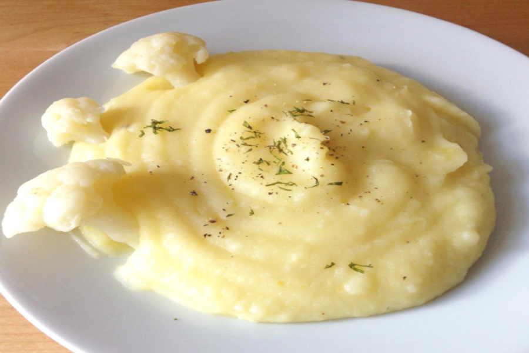
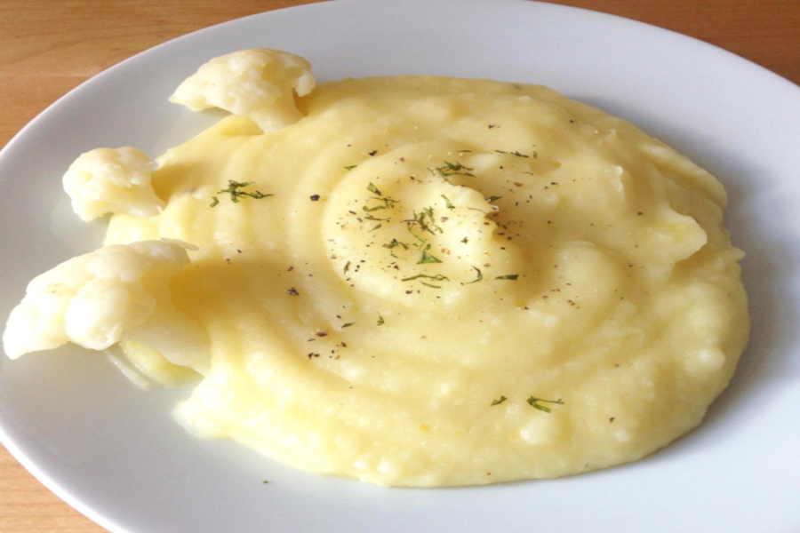

Receitas de Vó
- Reviva boas memórias
PURÊ DE BATATA
 

INGREDIENTES
- 1kg de batata;
- 1/2 xícara de leite;
- 2 colheres (sopa) de margarina;
- sal a gosto;
- 1 dente de alho espremido.
MODO DE PREPARO
- Cozinhe as batatas até ficarem bem moles;
- Descasque-as ainda quentes e esprema as batatas no espremedor;
- Despeje as batatas em um recipiente e acrescente a margarina, o sal e o alho, e mexa até que a margarina derreta por completo;
- Acrescente o leite aos poucos e continue mexendo;
- 2 minutos assim e já está pronto.